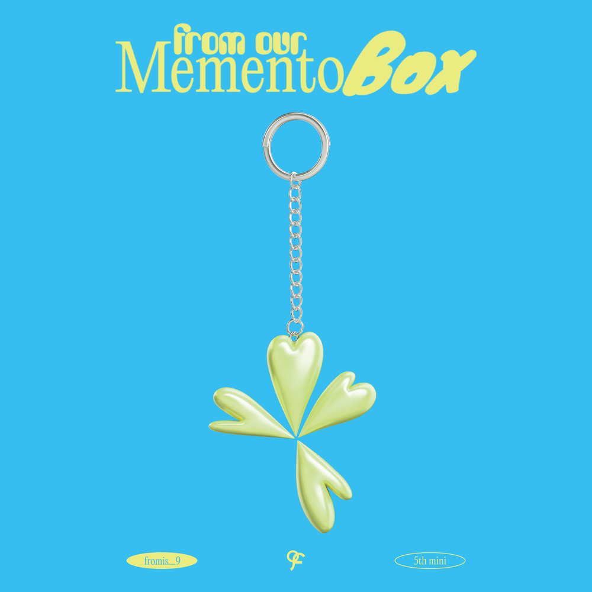

안녕하세요, 라보엠입니다.
오늘은 여행을 준비하거나, 여행길에 오를 때 꼭 들어야 할 곡으로 fromis_9 프로미스나인의 대표 서머송 ‘Stay This Way’를 추천드리려 합니다. 밝고 경쾌한 댄스팝 사운드, 즉흥적인 여행의 설렘, 그리고 프로미스나인 특유의 청량한 에너지가 가득한 이 곡은, 일상에서 벗어나 새로운 곳으로 떠나는 순간을 더욱 특별하게 만들어 줄 최고의 여행 메이트입니다. 사실 저는 헬스장에서 운동할 때 많이 듣는데요, 여행은 자주 할 수 없지만, 트레드밀에서 달릴 때 들으면 여행하는 느낌을 주기도해서 운동송으로도 추천드립니다.
즉흥 여행의 설렘을 담은 곡
‘Stay This Way’의 퍼포먼스는 파도, 달빛, 불꽃놀이 등 여름의 풍경을 무대 위에 그대로 옮겨놓은 듯한 생동감을 자랑합니다. 아홉 멤버가 펼치는 입체적인 안무와 시간차를 둔 동작들은 보는 것만으로도 여행지에서의 자유로움과 설렘이 느껴집니다. 사이판 올 로케이션으로 촬영된 뮤직비디오 역시 그림 같은 해변과 파티 분위기로, 여행을 떠나기 전 기대감을 한껏 높여줍니다.
이 노래는 해 질 무렵, 갑자기 훌쩍 떠나는 즉흥 여행의 설렘을 담고 있습니다. 반복되는 일상에서 벗어나, “우리 떠날래?”라는 한마디로 시작되는 이 곡은, 침대 위에서 흰 모래알을 상상하며 바닷가로 순간이동하는 듯한 자유로움을 선사합니다. 가사 곳곳에는 “조그만 해변, 너하고 나”, “파도 소리에 몸을 맡겨”, “매일이 난 Sunday”처럼, 현실의 무게를 잠시 내려놓고 싶은 순간에 꼭 어울리는 낭만이 가득합니다.
청량하고 펑키한 사운드, 여행길에 딱!
이 곡의 가장 큰 매력은 펑키한 베이스와 기타, 그리고 청량한 비트에서 느껴지는 여름의 기운입니다. 도입부터 경쾌하게 흐르는 리듬은 여행길의 설렘을 한껏 끌어올려주고, 후렴구의 “Stay this way 우린 뜨겁고 눈부셔, 자유롭게 춤춰”에서는 절로 어깨가 들썩입니다. 차 안에서, 기차 창가에서, 비행기 이륙을 기다리며 듣기에도 최고의 분위기를 만들어줍니다.
특히, 프로미스나인 멤버들의 밝고 힘 있는 목소리는 여행의 들뜬 기분을 한층 더 업 시켜주는 최고의 에너지 드링크 같은 역할을 합니다. 반복되는 “Stay with me, Stay, Stay with me”라는 후렴은, 마치 여행 동행자가 옆에서 함께 떠나자고 손을 잡아주는 듯한 기분을 느끼게 하죠.
프로미스나인 Stary this way - 가사 속 자유와 낭만
Ah yeah oh baby
우리 떠날래?
출발한 뒤에 고민해도 늦지 않아 (Tonight)
가끔 즉흥적인 게 좀 필요해
해가 저물면 (Oh yeah yeah)
또 몰래 침대 밖으로 발을 내려놓을 땐
흰 모래알이 느껴져
Yeah 이 느낌 (So great)
방문을 열고 자, 바람처럼 사라질래
지금 내 기분은 Higher
Take me higher
조그만 해변, 너하고 나
I just wanna stay
Stay this way
우린 뜨겁고 눈부셔
자유롭게 춤춰
저 달이 오늘따라 예뻐서
Stay this way
깊고 짙은 Blue
더 흠뻑 빠져
Stay this way
(Stay this way, My baby)
Stay with me, Stay, Stay with me
(Stay this way, My baby)
하늘 위로 Fireworks
우리의 조그만 바닷가에
날 바라보며 Stay this way
그림 같은 우리 Such a party
Moonlight 그림자
Groove it 춤을 추지
파도 소리에 몸을 맡겨
매일이 난 Sunday
월요일은 사라져
나를 끌어당겨
I wanna be next to you
완벽한 탈출 꿈만 같은 이 밤
So sweet (So sweet)
So good (So good)
그 어디든 발길이 닿는 대로
조그만 해변, 너하고 나
I just wanna stay
Stay this way
우린 뜨겁고 눈부셔
자유롭게 춤춰
저 달이 오늘따라 예뻐서
Stay this way
깊고 짙은 Blue
더 흠뻑 빠져
Stay this way
Disco (Disco)
Let's go (Let's go)
다른 모든 건 다 지워 (Yeah)
Get on the floor
and show me some more (Oh yeah)
Disco (Disco)
Let's go (Let's go)
다른 모든 건 다 지워 (다 지워)
So, Stay with me, Okay?
Stay this way
우린 서로를 비추며
춤을 추고 있어
오늘이 마지막인 것처럼
Stay this way
꿈 같은 걸
널 바라보며 Stay this way
(Stay this way, My baby)
Stay with me, Stay, Stay with me
(Stay this way, My baby)
하늘 위로 Fireworks
우리의 조그만 바닷가에
날 바라보며 Stay this way
Stay, Just stay with me
Stay with me forever, Stay with
Stay, Just stay with me woo
Stay, Just stay with me
Stay with me forever, Stay with stay
So, Last forever
Stay this way
이 곡은 “오늘이 마지막인 것처럼”, “완벽한 탈출, 꿈만 같은 이 밤”처럼 지금 이 순간을 소중하게 즐기자는 긍정의 메시지를 전합니다. 여행을 하다 보면 예상치 못한 일도 생기고, 때로는 피곤함도 있지만, ‘Stay This Way’의 가사는 그런 순간마다 한 번 더 미소 짓게 해줍니다. “Disco, Let’s go, 다른 모든 건 다 지워”라는 파트에서는 여행 중 쌓였던 스트레스까지 한 번에 날려버릴 수 있죠.
이런 분들께 추천드려요
- 여행길에 들뜬 마음을 음악으로 더 느끼고 싶은 분
- 드라이브, 기차, 비행기 등 이동 시간에 신나는 곡을 찾는 분
- 긍정적인 에너지와 밝은 K-팝을 좋아하는 분
- 운동할 때 비트있는 음악이 필요하신 분
맺음말
프로미스나인의 ‘Stay This Way’는 여행의 자유, 즉흥 여행의 설렘, 그리고 긍정적인 에너지가 가득한 곡입니다. 여행을 떠날 때 이 노래를 플레이하면, 어느새 지루했던 이동 시간이 파티로, 반복되는 일상이 설렘으로 바뀌는 마법을 경험할 수 있을 거예요. 오늘도 ‘Stay This Way’와 함께, 특별하고 행복한 여행길 되시길 바랍니다!
